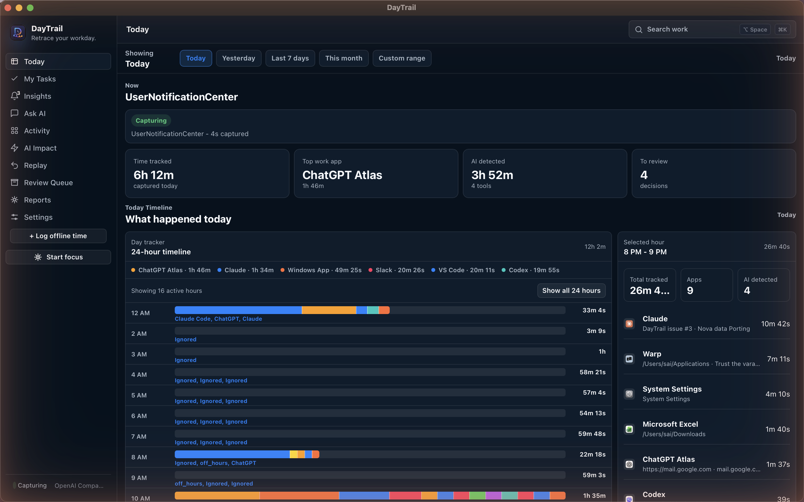
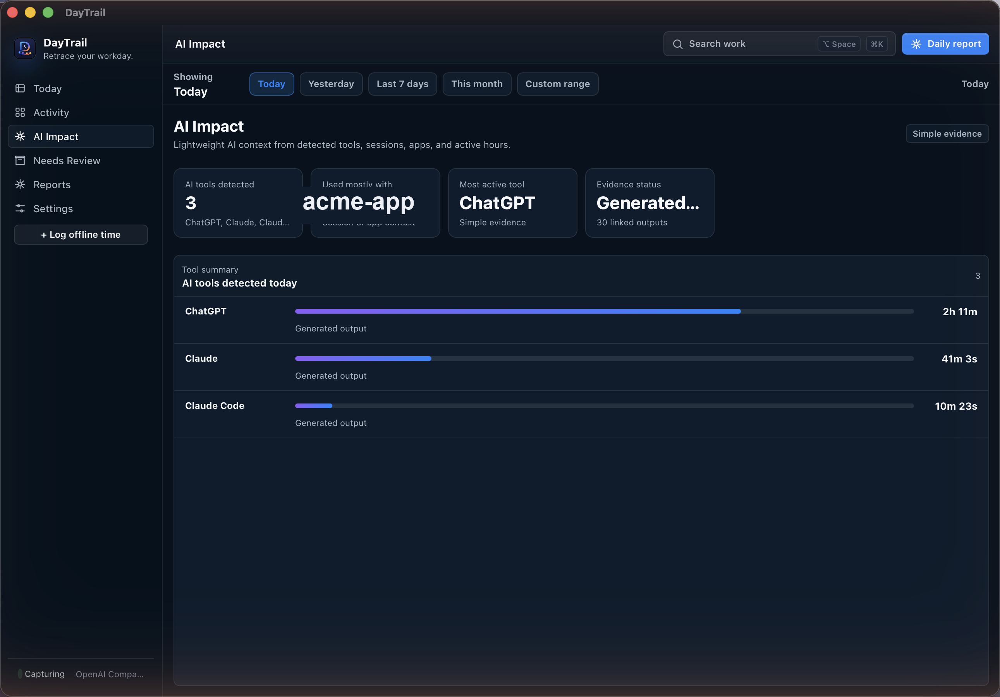
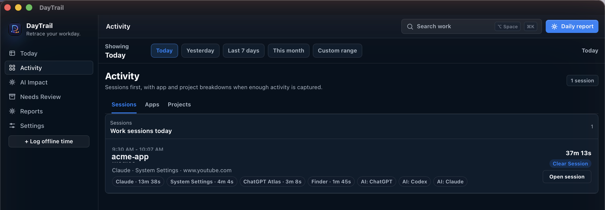
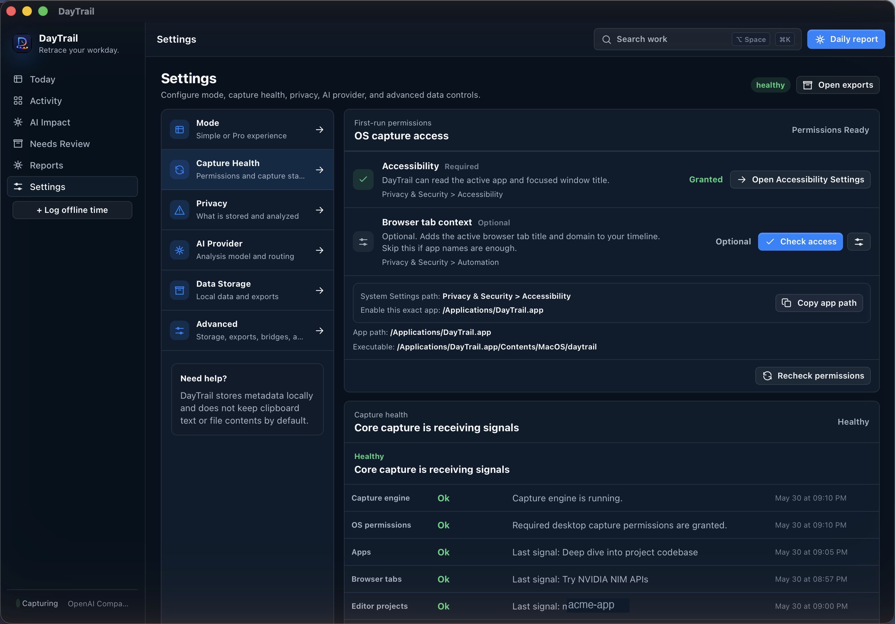

For knowledge workers
DayTrail shows where your workday actually went.

Today, reconstructed
Apps, tabs, editors, terminals, and AI tools become one private timeline.
Any day, any range
Switch from today to any date range when memory is fuzzy.

AI Impact
ChatGPT, Claude, Codex, Copilot, and local tools are measured honestly.

Source-backed sessions
Every session keeps the apps, projects, and evidence behind it.

Trust the capture
No more discovering at 6 PM that your tracker silently stopped.
Local-first
Metadata-first capture stays on your machine and keeps the trail useful.
Try DayTrail
Download the latest build and let one real workday tell the truth.